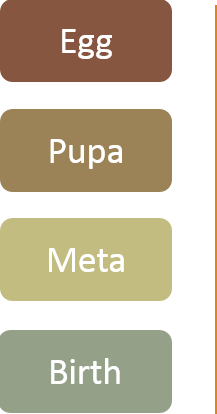

Guide
Deep overview of Kaizen model
This page aims to provide you deep understanding of the model
Preface
I was born in world where equality and stability was claimed as main purpose, that goal attracted millions of people under it's red banners. It is not the idea that fails people - but it's implementation, which resulted in inefficiency, corruption and huge waste. I believe that equality and stability can be achieved along with constant improvement, incorporation of innovation, while constantly performing waste removal.
Enterprises are like small countries and while trying to treat everybody equally, provide stability and measure their own success they, sometimes, fall prey to the same issues: they might miss on opportunity to use diversity, promote talent, encapsulate pride in workmanship and during attempts to measure own success - sometimes start introducing waste to the system in form of unneeded bureaucracy and extensive reporting.
This model is published as Work In Progress. I am strong believer that communities are stronger than any individual and, in current era - when we all are "connected", some great solutions can be created together.
Building rather than rebuilding
Every great idea was already told before and it's a slim chance that in our 60 years of adult life we would be able to say something different than billions before us... and they had couple thousand of years to do that.
Due to size and effort invested in current systems - I believe that recreating might be a wasted effort, and instead we need to focus on what was done good and build on top of it. The only way to do it - is to improve our cooperation, promote talent and single direction/vision, improve pride in workmanship and remove waste.
Goals
This model was build with 4 major goals: cooperation, talent, pride and waste removal:
Improve cooperation, by promoting commitment of all participants
- No pigs and chickens: everybody is involved, committed and responsible
- Lack of balance and responsibility for the decision - might influence morale and engagement. Everyone should be committed at the same level as we all share the same goal.
- Every decision is made in pairs, which promotes cooperation and shared responsibility / commitment.
Promote talent and innovation while providing single direction/vision
- Best people are selected for the job.
- Nobody knows stakeholder requirements better than person that gathered them, as well as nobody knows technology as technical people.
- BA provides business requirements knowledge to the team while Tech Lead/ SMEs provide technical leadership and direction.
Promotion of responsibility, involvement and pride in workmanship
- Pairs have equal impact on the project, which promotes responsibility and involvement.
- Shared responsibility, removal of waste and promotion of talent - improves pride in workmanship.
Providing visibility of waste and continuous improvement of process
- Ability to see where things went wrong and improve it in the next cycle.
- Every decision is recorded, impact is analysed and waste identified (during cycle end).
Guidelines
Model
Model consists of cycles
Provides control over development, adaptability to requirements change and visibility of result
Cycle consists of 4 phases
Phases provides separation of responsibilities and process under control
During 3rd phase - new cycle is started (so-called sub-cycle)
The goal is to provide supply for the next cycle (while current cycle is "constructed")
Length of cycle cannot be less than 2 weeks
Very short cycles won't give enough time to perform all activities efficiently For support tasks – 2 week cycle is allowed, but amount of checkpoints should be decreased to 1-2 Kaizen Lite model is introduced to meet requirements of support tasks
It is recommended that length of cycle won't be longer than 2 month
Long cycles would eliminate visibility and might slide into endless development
Every cycle is both functionality and time boxed
Functionality is important as it delivers value to the customer Time is important as it influences deadline and budget of the product
PM/TL set direction (manage), BA/Tech Lead provide vision (requirements/architecture) and SME/Team provide construction
It is important to select best people for the task. This approach allows using best talent and experience for the task and, therefore, decreases possible waste
Direction, vision and construction is done in "pairs"
Project manager and Team Leader (together) provide direction Business Analyst and Technical Leader (together) provide vision SME's and Team (together) provide construction
Working in pair promotes peer review and cooperation
Cooperation of roles (work in pairs) is crucial part of the model/project as it improves cooperation between business and IT, allows peer review and ensures that needs/constraints of business/technology are taken into account
Milestones
Milestones - are tasks which are needed to be implemented within cycle
Milestones are integral part of the system. It is smallest part (building block) of the project
Milestones are defined by Business Analyst and Technical Lead
BA delivers business requirements and technical lead compiles technical requirements Milestones are put into Milestones log
Recommended maximum duration of milestone is 1 week
Long milestones are hard to design, harder to modify (after requirements change) and are prone to be left uncompleted due to time constraints.
Change in requirements, during development phase, results in its move to the next cycle
Such change require additional requirements clarification and re-evaluation of technical solution/design
Showcase/presentation should be performed after milestone delivery
Presentation improves visibility for business and confirms that it is implemented according to expectations
Functionality first, optimization - after
Milestone should deliver functionality (value for the customer), optimization should be performed after the delivery (during last phase of the cycle) Basic Unit/Integration tests should be delivered along with the milestone Advanced/deep Unit/Integration tests should be delivered after optimization (last phase)
Business Analyst (BA)
Produces business requirements
Business Analysts analyse vision and requirements of Stakeholders and compiles business requirements based on it
Co-produces milestones
Based on business requirements, in cooperation with Technical Lead, produces milestones and adds them into Milestones log
Available for requirements clarification
If some requirements are not clear, unavailability of BA to clarify them - would lead to assumptions and delivery of product not according to expectations
Keep workload under control (remove muri)
Role vital for the project as it provides business view and requirements; therefore cannot be overloaded If needed - some milestones can be moved to next cycle
Technical Lead
Produces architecture / high level design based on business requirements
Analyses business requirements and produces architecture / high level design for milestones / system
Produces technical requirements (for team) based on architecture/design
Based on produced architecture / high level design - produces technical requirements for team to follow
Technical Lead deliverables are reviewed / validated by SME
Working in pairs provide peer review, validation and improves final technical solution
Co-produces milestones
Based on architecture / high level design, in cooperation with Business Analyst - produces milestones and adds them into Milestones log
Develops POC's, prototypes and shared services
Confirms high level design/architecture solution and provides practical examples for other team members
Provides unified technical view/direction for project/service
Defines technical direction for project and components/services of the system
Available for requirements clarification
If some requirements are not clear, unavailability of Tech Lead to clarify them - would lead to assumptions and delivery of product with incorrect implementation
Keep workload under control (remove muri)
Role vital for the project as it provides technical direction/vision for whole project; therefore cannot be overloaded If needed - some milestones can be moved to next cycle
Project Manager (PM)
Co-manages direction of the project
Along with Team Leader - manages/controls direction of the project
Communication with business regarding project progress
Communicate to the business progress/risks/issues/waste
Tracking waste of the project (business) and compiling recycle plan
Provide detailed log of waste on business side and co-created recycle plan during cycle end (last checkpoint)
Can manage few projects
Teams are meant to be self sufficient and amount of managing should be kept at minimum Load (per project) for Project Manager is relatively low, so it is allowed to work on few projects at the same time
Team Leader (TL)
Co-manages direction of the project
Along with Project Manager - manages/controls direction of the project
Communicates with Developers regarding changes/decisions/progress of the project
Communicate to the team progress/changes/decisions/risks/issues/waste
Tracking waste of the project (technical) and compiling recycle plan
Provide detailed log of waste on technical side and co-created recycle plan during cycle end (last checkpoint)
Can manage few projects or perform technical responsibilities
Teams are meant to be self sufficient and amount of managing should be kept at minimum Load (per project) for Team Leader is relatively low, so it is allowed to perform SME's responsibilities or work on multiple projects
Subject Matter Expert (SME's)
Provides technical validation / assistance to Technical Lead in defining architecture / high level design
Working in pairs provide peer review, validation and improves final technical solution
In cooperation with Technical Lead or another SME defines low level design
Working in pairs allows to perform peer review and remove possible technical waste
Develops POCs, prototypes, shared services and works directly on implementation
Confirms design solution and provides practical examples for other team members
Is selected for role based on skills and experience to provide unified technical view/direction and technical expertise
The main responsibility of this role is to drive technical implementation for whole team and provide technical expertise/advices/trainings(if possible)
Works together with the team on implementation and is involved in daily meetings
As part of construction group - involved in construction / implementation
Team
Team is self organization "role" which is responsible for implementation
Is most vital part of every project as it translates "need" into "result" and is responsible for delivering value to the customer
Team is self organizing and independent role
Promote responsibility, involvement and pride in workmanship Avoids micromanaging (although Team Leader might help in providing some direction)
Size of team should be relatively small to keep it lean and agile
Keeping team small improves management, communication and cooperation
Team should have daily meetings to keep everybody updated
Daily meetings provide synchronization on work done, issues and allows avoiding development conflicts TL compiles daily meeting notes based on feedback of team members before daily meeting Daily meetings are capped at 15 minutes and should be interrupted afterwards (meeting notes should be sent and would allow to catch up)
Keeps constant contact with Business Analyst and Technical Lead
Constant cooperation with BA and Tech Lead would allow to deliver according to business expectation and according to best technical solutions
Decisions / Responsibilities
While ideas / decisions are vital for survival of the project / company, unlike any physical entity, decisions / ideas cannot be measured and are compared solely against common sense / opinions of other people.
Also given that current projects are huge and one person might not be able to take into account everything - this model promotes for roles to work in cooperation with each other. Cooperation is vital part of this model, and failure to follow it - would lead to failure of it in your project.
Pairs
- Vision
-
Vision for the project is created by pair Business Analyst and Technical Lead
- Direction
-
Direction for the project is controlled by Project Manager and Team Leader
- Construction
-
Construction / implementation of the project is performed by SME's and Team.
Responsibilities
- Business Analyst
-
- Compiles business requirements
- Co-creates milestones
- Milestones log co-owner
- Technical Lead
-
- Creates architecture / high level design (with support from SME)
- Compiles technical requirements
- Develops POC's, prototypes and shared services
- Co-creates milestones
- Milestones log co-owner
- Project Manager
-
- Co-manages direction of the project
- Risks log co-owner
- Debt log co-owner
- Recycle plan co-owner
- Team Leader
-
- Co-manages direction of the project
- Risks log co-owner
- Debt log co-owner
- Recycle plan co-owner
- SME's
-
- Supports Technical Lead with architecture creation
- Co-creates low level design
- Develops POC's, prototypes and shared services
- Involved in implementation
- Issues log co-owner
- Team
-
- Responsible for implementation
- Issues log co-owner
Four phases of the cycle
It is assumed that project was “shaped” before starting development cycle: business modelling was concluded (scope, definition, budget, schedule etc.).

Requirements compilation (both business and technical)
Planning and preparation for construction / implementation
Construction of the milestones
Delivery of the milestones
Requirements (egg)
- Compilation of business requirements
- Creation of architecture / high level design
- Definition of technical requirements
- Filling up of Milestones log
Planning (pupa)
- Revision of recycle plan
- Definition of milestones per current cycle
- Working with SME / Team to assign milestones and prepare estimations
- Risks definition
Construction (metamorphosis)
- Daily progress update
- Definition of low level design
- Implementation of the milestones
- Brief showcase of milestones
Delivery (birth)
- Presentation of delivered milestones to BA/Technical Lead
- Optimization and additional unit/integration tests development
- QA and Deploy
- Reflection upon cycle and recycle plan definition
Waste tracking
Debt
Debt is tracked per entity (business / IT)
Will allow to separate two types of waste and analyse/address them in more efficient way
Debt owners are PM (business) and TL (technical)
In case of questions – they are first contact point and can make final decision about respective debt
Secondary debt owners are BA (business) and Tech Lead (technical). In case first contact point is not available – secondary contact point can answer questions and make final decision about respective debt
Setting limit for debt is not mandatory, but if one is set – after meeting it – restart of cycle is required
Limiting amount of waste per cycle allowed is good idea and would allow restart cycle with “clean sheet”
Pairs principle applies in here as well. It is crucial to have agreement from both sides and without mutual agreement – debt is not modified.
If possible/current waste was identified by Vision team - they make mutual decision about adding it to the Debt log
Example: if BA wasn't able to finish with business requirements and requested for this milestone to be included in current cycle – waste is on business side and should be added to business debt.
Example: if Tech Lead wasn't able to finish with technical requirements and requested for this milestone to be included in current cycle – waste is on technical side and should be added to technical debt.
If possible/current waste was identified by Direction team - they make mutual decision about adding it to the Debt log
Example: if PM requested to perform additional and/or undefined report (additionally to existing ones / above standard requirement) – waste is on business side and should be added to business debt.
Example: if TL haven't submitted check-list for code review and requested to perform it without one – waste is on technical side and should be added to technical debt.
If possible/current waste was identified by Construction team - they make mutual decision about adding it to the Debt log
Example: if Technical Lead offers solution with which SME's / Team does not agree, but are requested to implement it – debt is recorded.
Example: if SME offers implementation with which Team does not agree, but are requested to implement it – debt is recorded.
During final phase of cycle – debt should be analysed and waste removal strategy should be set for next cycle
Debt analysis is not just one of the most important aspects of final phase, but the whole cycle as well
If the same items appear in debt log more that two cycles in a row - process should be analysed and improved
And please don't forget - be nice!
Goal of debt is not to track somebody's mistakes, but is to track waste so we won't have to go through the same issues the next time
Checkpoints
Checkpoints are meant to help you evaluate current situation and update risks, issues and debt log.
Debt log owners (Direction pair) should participate in every checkpoint. Meeting should have predefined duration. By default every phase is ended by a checkpoint:
Requirements (egg):
Recommended duration is 1h. Pair BA+Tech Lead (with PM+TL) analyse progress so far and discuss/update risks, issues and debt log.
Planning (pupa):
Recommended duration is 2h. PM+TL with BA+Tech Lead analyse progress so far and discuss/update risks, issues and debt log.
Construction (metamorphosis):
Recommended duration is 2h. Team+SME's with PM+TL reflect upon progress so far and discuss/update risks, issues and debt log.
Delivery (birth):
Recommended duration is 4-8h. Everybody reflects upon progress so far and discusses/updates risks, issues and debt log. Next step - would be final vote of debt value (details in logs section). Afterwards - all logs should be analysed and recycle plan should be compiled. It is important to look at dynamics in all logs (between phases) and trace risks which became issues; issues which left unattended and generated debt; and debt which was valued as low but turned out to be very high.
In case when cycle length is set to 2 weeks - it is recommended to at least keep last checkpoint and decrease it's duration.
Every additional checkpoint can be set depending on project needs.
Logs
Usually every log is available for everyone, but update is performed by log owners; by their own volition or by request from other member. That brings benefits as owner might ask additional questions, provide addition opinion/view and would be aware of all items in the log. Consequently this would allow for everybody to have single contact point regarding items in the logs.
Even though every log have it's owner – Direction pair could frequently review them and discuss it with owners.
If it wasn't done during phases - it is advisable to update logs during every checkpoint, which means, by default, that they should be updated at least 4 times per cycle.
Milestones log
Milestones log owner is Vision pair. Amount of milestone details is defined on per project basis: for short cycles and cases where developers have good understanding of business and technical requirements – amount of details can be kept to minimum, but as amount of milestones and/or size of time rises – it is very important to provide sufficient amount of details (might need consultation with a Team). It is better to overdo rather than provide too little information.
Risks log
Risks log owner is Vision and Direction pairs. Risks log can be filled according to any preferred Project Management standard template.
Issues log
Issues log owner is Construction pair with possible support from Direction pair. Issues log is filled according to any preferred Project Management standard template.
Debt log
Debt log owner is Direction pair. Every debt log should keep description of the debt (enough to identify it to outside party) with 3 values: perceived debt value (provided by requester), perceived debt value (provided by Direction pair) and final value - actual debt value - would be defined and entered during last checkpoint. During said checkpoint meeting – every item in debt log is voted (by everyone) and actual debt value is entered. By doing so - we could visualize the difference between perceived debt (during development) and actual debt of the project which, in turn, would allow us to identify "icebergs" and "overblown" debt and compile Recycle plan accordingly.
Recycle plan
Recycle plan owner is Direction pair. It is the one of the most important part of delivery (birth) phase and it is strongly advisable to include everyone in discussion and brainstorming sessions. Risks and issues logs (from all checkpoints) are analysed, as it is important to understand which risks turned into issues and, consequently, which issues created debt. After debt log goes through voting and perceived debt was compared (by everyone) with actual debt - improvement plan is compiled. Debt log serves as main source of information and ordering for recycle plan.
Visualize
It is very important to visualize your current process to see work done and make adjustment when needed. By visualizing you will be able to see process more clearly, you will be able to visualize impact of issues on your project and track waste more effectively.
There are a lot of online tools out there, which would allow you to visualize your work flow and it is highly recommended that you select one (which suits you best).
Kanban method
As you've seen by now - this model inherits features from few existing methodologies / processes / models one of which is Lean process; Kaizen model is highly focused on waste tracking and removal, which is one of the priorities of Lean process as well. Kanban method works well with Lean and, by inheritance, works great with this model as they share the same goal.
It is very advisable to use Kanban method and Kanban board with this model, as it would help focus on topics that are outside of scope of this document and significantly improve organization / visibility which, as a result, would substantially improve efficiency of process as a whole.
Best practises
This chapter was meant to share experience and advice to increase delivery of value and decrease waste
I really hope that this chapter would significantly grow over time...
DO's
(deliver value)
Business
Group teams by interests to increase productivity
When people share same interests and goals, they become connected to their co-workers - which usually leads to more positive work atmosphere and experience
Don't get carried away with documentation. Gigabytes of useless files won't help understand system. Keep it short and simple, and utilize Wiki as much as possible
Big amount of documentation with no proper search system increases learning curve and amount of time spent with no guarantee that needed information would actually be found
Failure to find relevant information would require to contact somebody in order to get it, which, consequently, creates additional unplanned workload on that person and creates dependency for the project
Incorrect/outdated document might lead to incorrect solutions and implementations
Monitor market and select decisions according to current practices and available resources within the company/market
Sometimes it is better to use little older technology instead of spending huge amount of time recruiting people with right knowledge
Some newest technologies might not be ready for that specific usage
Do self assessment often
The cheapest way is to ask another(more experienced) department/entity to look at your current processes and procedures.
Try to get feedback from your partners as they might be able to evaluate your entity from different perspective
Talk with newcomers (especially with >5 years of experience) and ask what they think about current processes/procedures
During first few month every small detail/change is very visible for newcomer and you might want to reuse that fact to improve your process/standards/procedures/tools etc.
Every newcomer comes with their experience from previous workplace and might offer solution to the your problem which was already successfully tackled there
Close the understanding gap between Business and IT, as it would increase understanding and cooperation between them
For those who are interested - teach engineers business side of the company
For those who are interested – provide some basic technical seminars
Understanding business goals and what brings value for customer might improve final product produced by engineers
Understanding basic technical limitations/constraints/challenges might make requirements, produced by business, more feasible and easier to implement
Invest into HR and do not overload them
Selecting right people requires effort, time and proper procedures
Right people would require less management, would be more motivated and would deliver better product with good quality
On other side – incorrect people would require more managing, would be unsatisfied and unhappy and might not be able to deliver good quality
Promote pride in workmanship
"Tie" process with positive emotions and unite everyone under single goal
Pride in workmanship increases involvement and productivity
Improves cooperation as everybody share the same goal
Enterprises and innovation - get maximum benefits with minimal impact
It is easier to change 20% of company by 80%, than change 80% by 20%
Due to size - experiments cannot be performed on huge scale. Start with small entities as proof of concept
Enterprises are slow to change due to size, and change should be started at most agile/lean/adaptive entities and slowly spread across the company
Entities are most eager to change - absorb change most efficiently, others - not so much
Due to their eagerness to change and adaptability - experience of successful entities might not be completely copied to less successful ones
During application of experience of most successful entities (that 20%) - adapt solution on the fly to meet demands of 80%. Not everyone has capacity/experience/skills to change as quickly and efficiently as the most successful ones
It is very beneficial to have guidelines for roles
Guidelines would shorten learning curve and would allow to work more efficiently for newcomers
Guidelines would allow to avoid responsibility conflicts, as it would clearly state most important responsibilities and guide its implementation
Control the direction of the meetings
Meetings are great way to share knowledge and communicate between group of people, but if it goes out of the control, in future, it might hurt cooperation
Meeting chair should be trained to control and mitigate possible issues during the meetings
IT
Invest into teaching and skills of your resources
IT is constantly changing and just in five years technology may become deprecated, that's why it is important to invest constantly into skills of your resources
Technical presentations/seminars to improve presentation skills for those who want
Tell me and I'll forget; show me and I may remember; involve me and I'll understand
Showing/presentation alone isn't the most effective form of training
Showing/presentation should be used in conjunction with practical exercises during or right after the training
Create atmosphere of achievement
Creating proper atmosphere would drive people to constantly innovate and create better products
It is very tricky, but with right team and atmosphere - will promote creativity and innovation
Try to define shared services and implement them during early stages of construction
This is place where most implementations miss opportunity to simplify system and should be part of strategy for every project
Shared services would provide guidelines, increase efficiency and decrease time/budget of the project
As it was proven by industry more than once – create API first, as it would simplify usage and cooperation between teams
Keep API simple and avoid exposing internal implementation
Outside teams should be able to use it without additional explanation and won't be needing to gain knowledge of underlying system
Involve employees into problem detection as well as solution search
Employees have first hand experience with those problems as they fight them on daily basis
Experience fighting those problems on daily basis provides them with needed expertise to offer effective solution
The greatest ideas were already shared long time ago (don't generate ideas for ideas sake), instead focus on great implementation
Try to focus not only on ideas, but also ask people about what value they can bring to customer (in short/mid/long term)
Ask for ideas together with it's implementation/direction, as one cannot be done without the other
Process starts with right idea, but it is completed only with right implementation
Use consultant services wisely
Involvement and investment into whole lifecycle of the product is important and would allow to make best decisions
Please be aware that outside consultant might not have complete understanding of the company's infrastructure, so additional training might be needed
If consultant is affiliated with some outside company – require proof of concept and integration with all existing services, as it is place where it fails most often
Select product/systems/services not only based on "adoption" budget, but also calculate "demise" budget for previous one
Adoption of new product/system/service is often connected to demise of previous one and should be measured
If new product/system/service won't be replacing but would served as addition – it would be needing additional support/resources and, again, should be measured
Performing changes while keeping in mind big picture
It is recommended that analysis to be performed not for task at hand - but for whole system
It is dangerous to create “local” solution which might increase complexity or even break existing system
For support tasks - please use Kaizen lite
DONT's
(remove waste)
Business
Complication brings additional challenges and expenses. Keep it simple.
Every additional element in the system/process requires additional maintenance/resources/support
Complicated system require more reporting / measuring / evaluation / planning and would require more support and maintenance
Perform knowledge transfer according to best process/procedures/policies
Chaotic knowledge transfer process might lead to incorrect implementation and consequent service failure
Everything is subjective - even learning process: we remember only our understanding of subject, but that might be a little different than author meant. With every subsequent retelling of the same story - additional elements are introduced to it. Please get knowledge from source if possible (from qualified trainer).
Performing responsibilities of other side might lead to failure/waste
Everyone is selected based on skills/experience need and failure to utilize that leads to failure/waste
Business cannot define technical architecture/design as they are not committed nor are responsible for it. Also they might not be fully aware of current technical requirements and technical solutions
IT cannot define business process/procedures as they are not committed nor are responsible for it. Also they might not be fully aware of current requirements and market
Avoid running IT as cost center
Saving money at beginning might result in more extensive/expensive support needed
Try to simplify, optimize and this would result in doing more with less
Both sides should work on same goal and stop giving answers based on what they think is expected from them
IT should stop saying “no” to everything, as this would lead to loss of competitiveness. Keep it balanced
Management should stop saying “yes” to everything, as it would lead to impossible projects and loss of money and competitiveness. Keep it balanced
Remember that reports does not bring value to customer
This is one of the biggest waste of enterprises. Keep it simple and short
Reports should be defined by Management before they are requested - as IT doesn't know what values are important to the business
Management should perform analysis of current/available systems and requests report which is possible with current infrastructure or request to create one (as separate project with separate budget)
Keep track of assignments set to the team
Sometimes assignments are given without synchronizing with others - which creates invisible overload on resources and might lead to failure of projects
One small task might not have big impact, but as experience shows - amount of tasks only grows with time and might be source of overload and waste for current project
Usage of few reporting tools at the same time provides additional stress as it requires constant attention, synchronization and time - and should be avoided as much as possible
Use appropriate process for appropriate project, don't overkill
Use formal process for middle and big projects
Use less formal process for small project, as usage of formal methods might result in project going over deadline/budget while not bringing any benefits
Be very carefully how you choose your first people for project as they will define direction/implementation of the project
Keep in mind that people promote people with skills similar to the ones they have
Every subsequent addition would be focused on learning rather than defining project
Meeting does not bring value to customer
They are vital for every project, but keeping them to minimum is essential
Too frequent meetings, which doesn't bring value to the team, might be exhausting and might impact quality
Get feedback from participants about frequency of meetings and define it based on needs and wishes
Define, where applicable, guidelines as they might guide meeting direction
Don't put people out of their comfort zone
Practices used in Business might not work as well in IT
People working in Business and IT might not have the same interests, so try to adapt to each needs and provide comfortable atmosphere for everyone
Do not overload people
Overload is almost guaranteed source of waste
Perform assignment tracking and load tracking to properly assess load on a person
If no tracking system is available – get frequent feedback from every member directly
People like to work with the ones they feel comfortable with
Due to lack of understanding / limited cooperation - sometimes Business is not comfortable working with IT directly which, later, might result in waste
Try to manage atmosphere and cooperation between entities - so it would promote efficient cooperation
If business requirements were not transferred properly because of it – project/product and, consequently, business would suffer
Don't search panacea in fancy names and new versions
Sometimes update (new version) doesn't bring new features, but in the end it just increases complexity and decreases visibility
Migrating to new product should be justified by creating extensive proof of concept, not only by numbers provided by manufacturer
Marketing material have goal - sell. Please advise with SME's before making decisions
Adding people at late stage won't improve delivery date
Training, requirements clarifying, realigning of tasks, knowledge transfer and additional management require time and investment of current members
The reason behind late delivery - is lack of time/resources and increasing load on those people would only make delivery even later
Don't promote people to higher position to improve entity image “on paper”
People with not enough skills/experience might deliver/provide incorrect service and/or lead project into incorrect direction
People with not enough skills/experience would require more time to perform activities
Incorrect/inefficient knowledge might be transferred to other members and would increase waste generation within organization
Do not push/demand but provide/offer
First entity shouldn't demand knowledge of it's processes from second entity, as they have their own processes to follow and deadlines to keep
Instead of demanding – provide knowledge transfer/meetings for both sides to understand processes within each entity better
Don't follow manufacturing methodologies to letter
In manufacturing you are creating one product many times, where in software development you create new product every time
In manufacturing – before product is produced – single extensive R&D is performed, while in software development it is performed along with every implementation
Success is not exclusive domain of one entity (or don't take pride in workmanship)
Success is defined by numbers and sometimes the one who produces them tends to put it in it's favour
Taking full credit for success takes pride in workmanship from those who were involved in it
Because of above - decreases involvement, cooperation and quality of delivery
Not telling employees about their weaknesses/issues deprives them from opportunity to improve
If person haven't told that something is wrong - that person is right to assume that everything is done correctly and should be continued
Knowing your weaknesses/issues allows you to spend time on minimising/improving them
It is very sensitive matter and should be handled carefully
Conflict of responsibilities
The bigger the company - the most likely that occur
Might be significant source of business waste as some people won't know who to listen and what to do
Conflict of responsibility results in confusion, duplicated solutions, multiple decisions and not working solutions
Responsibilities should be clearly defined (on paper) and should be available for everyone to read (not only for that role)
During definition of responsibilities - other roles should be checked if there is no conflicts
If you feel that you have to choose lesser evil - re-evaluate process from the beginning
Ending up with only bad choices means that (in any case) bad choice would be selected, and it is irrelevant that it was "lesser" evil
Process which lead to bad choices only - might be flawed and should be re-examined
Endless development
Ability to constantly submit new requirements and get new features is tempting and might result in endless stream of requests and, consequently, endless development
Before project start - describe what functionality is essential and control new feature requests
Predictable amount of work would result in predictable development timeline and deadline
IT
Theory is not always enough, please mix it with practical/successful experience
Knowledge of technology without practical usage might produce waste, as majority of them have limitations which are not communicated ahead
Practical experience would allow more efficient usage of technology
If you feel that you have to choose lesser evil - re-evaluate solution from the beginning
Ending up with only bad choices means that (in any case) bad choice would be selected, and it is irrelevant that it was "lesser" evil
Solution which lead to bad choices only - might be flawed and should be re-examined
Perform proper knowledge transfer
It is important to have single understanding and vision to deliver quality product
Procedure for knowledge transfer should be established
Knowledge transfer require time to prepare, as well as willing and skilled member to perform it
Not every engineer born to be a trainer. Please nominate the ones with relevant skills, talents and will to perform it
Badly engineered shared/common services might be huge source of technical debt
Engineer shared/common services very carefully
If one (bad service) was identified - it should be assigned with high priority and, consequently, rewritten/improved
If some of quality requirements are not possible to meet and those requirements cannot be amended - internal quality baseline might be defined and followed
It is better to follow less demanding (baseline) requirements, than don't follow anything
Requirements which impossible to meet impacts morale and lowers commitment to quality
Due to lack of commitment to quality and lower morale - pride of workmanship might be affected
Peer Review – proceed with caution
If code is checked by person without knowledge of requirements/system/design – waste might be introduced to the system
This model promotes pride in workmanship and claims that code is bad might have negative impact on cooperation between two members
Assemble teams with mixed experience
High amount of junior members in the team would lead to lack of expertise and experience and, consequently, might lead to lower quality of delivery
High amount of senior members in the team would lead to lost opportunity to mentor and knowledge transfer to less experienced members
Prologue
Instead of Ending
The same as every mechanism consists of same mechanical parts – every methodology have a lot in common. This comes from the fact that they all are trying to solve the same problem while selecting different approaches.
In the world where we don't want have one company to produce everything (monopoly), we want to wear different clothes, drive different cars, have different houses... and just to stay unique – I don't believe that there is something that would fit every purpose. Don't expect this model to work for every company, on every level and for every project - always select what fits best.
This model was meant to bring departments closer, remove waste and improve processes but please don't consider it (or any other model) as solution for problems within the company. Driver which crashed Volkswagen will definitely crash Ferrari as well, and will do it much more faster. Please prepare proper foundation before making any major changes in the processes.
Even if you won't agree with model in general, I really hope you will be able to take something from it to improve processes / cooperation / commitment in your company.
Thank you
Feedback
Below you can provide feedback, suggestions, questions regarding information posted on current page